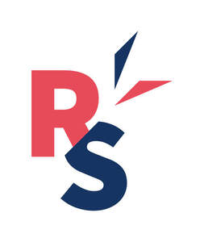
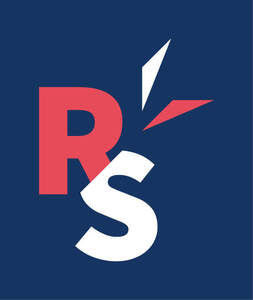
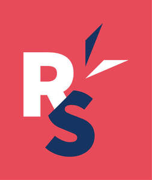
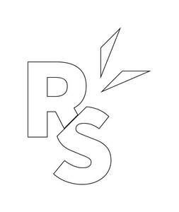

Trade Mark Journal No.2026/011 13 March 2026
UK00004345484 25 February 2026 (42)
Mark 1

Mark 2

Mark 3

Mark 4

Main monogram logo mark consists of a stylised monogram featuring a large uppercase 'R' in red (pantone 1785 C) and lowercase dark blue 's' (pantone 534 C) with two small graphics showing snapping exit between the two words (shard-like shapes; one dark blue shard pointing upward and one red shard pointing to the right). The white background is not claimed as a feature of the mark. Reversed mark 1 consists of a stylised monogram featuring a large uppercase 'R' in red (pantone 1785 C) and lowercase white 's' with two small graphics showing snapping exit between the two words (shard-like shapes; one white shard pointing upward and one red shard pointing to the right). The dark blue background is not claimed as a feature of the mark and is indicative of potential use only. Reversed mark 2 consists of a stylised monogram featuring a large uppercase 'R' in white and lowercase dark blue 's' (pantone 534 C) with two small graphics showing snapping exit between the two words (shard-like shapes; one dark blue shard pointing upward and one white shard pointing to the right). The red background is not claimed as a feature of the mark and is indicative of potential use only. - Outlined version shows overall shape, font style and snapping exit between text elements.
- Class 42
- Website design; Homepage and webpage design; Website hosting services; Website design services; Web site design; Computer website design; Web site hosting services; Website design consultancy; Web site design services; Internet web site design services; Web site design consultancy; Web page design services; Website development services; Hosting an online website for creating and hosting micro websites for businesses; Webpage design services; Website design and development; Web site design and creation services; Website development for others; Hosting web sites; Hosting of web sites; Hosting websites; Hosting of websites; Web portal design; Hosting of customized web pages; Hosting websites on the Internet; Design of web sites; Web hosting; Design of home pages and web sites; Design of websites; Design of homepages and websites; Maintenance of websites and hosting on-line web facilities for others; Graphic design for the compilation of web pages on the internet; Rental of software for website development; Hosting web portals; Hosting of web portals; Hosting computer websites; Computer site design; Creation of internet web sites; Compilation of web pages for the Internet; Hosting online web facilities for others for sharing online content; Design and updating of home pages and web pages; Design and creation of homepages and web pages; Programming of software for website development; Web hosting services; Creating electronically stored web pages for online services and the internet; Hosting on-line web facilities for others; Design and development of homepages and websites; Programming of web pages; Hosting the web sites of others; Commissioned writing of computer programs, software and code for the creation of web pages on the Internet; Hosting the computer sites (web sites) of others; Programming of customized web pages; Hosting a website for the electronic storage of digital photographs and videos; Consultancy relating to the design of home pages and Internet sites; Design and construction of homepages and websites; Design of homepages and Internet pages; Consultancy relating to the design of homepages and Internet pages; Consultancy with regard to webpage design; Hosting on-line web facilities for others for managing and sharing on-line content; Design and graphic arts design for the creation of web pages on the Internet; Design, creation and programming of web pages; Design and creation of web sites for others; Creating websites; Installing web pages on the internet for others; Designing websites for advertising purposes; Consultancy relating to the creation and design of websites for e-commerce; Design of Internet pages; Design and creating web sites for others; Interactive hosting services which allow the users to publish and share their own content and images online; Creation and maintenance of web sites; Design and development of software for website development.
Red Snapper Limited